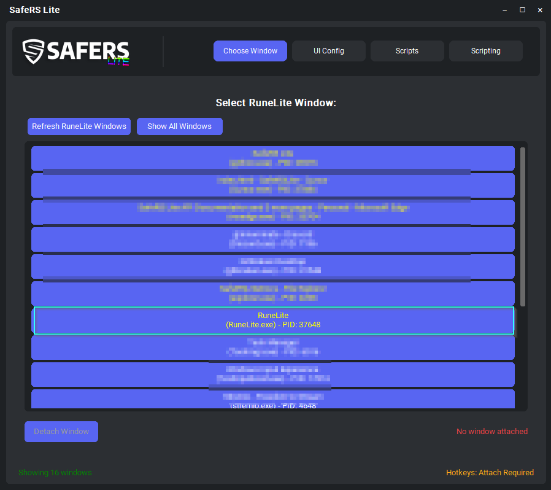
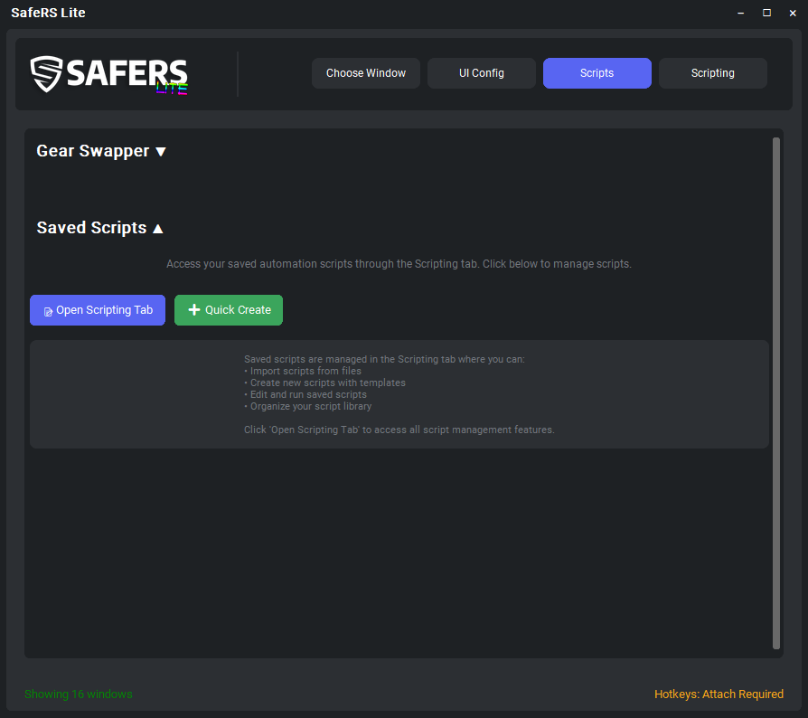
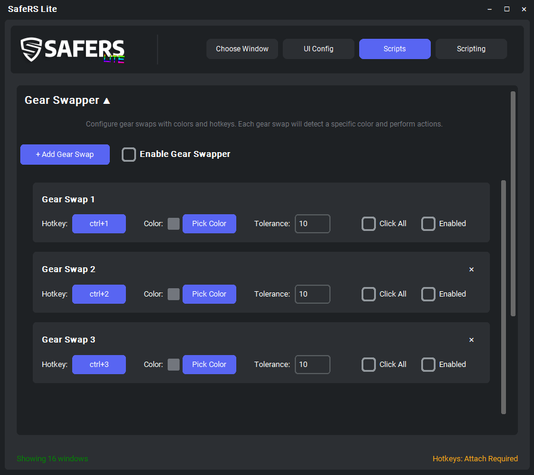
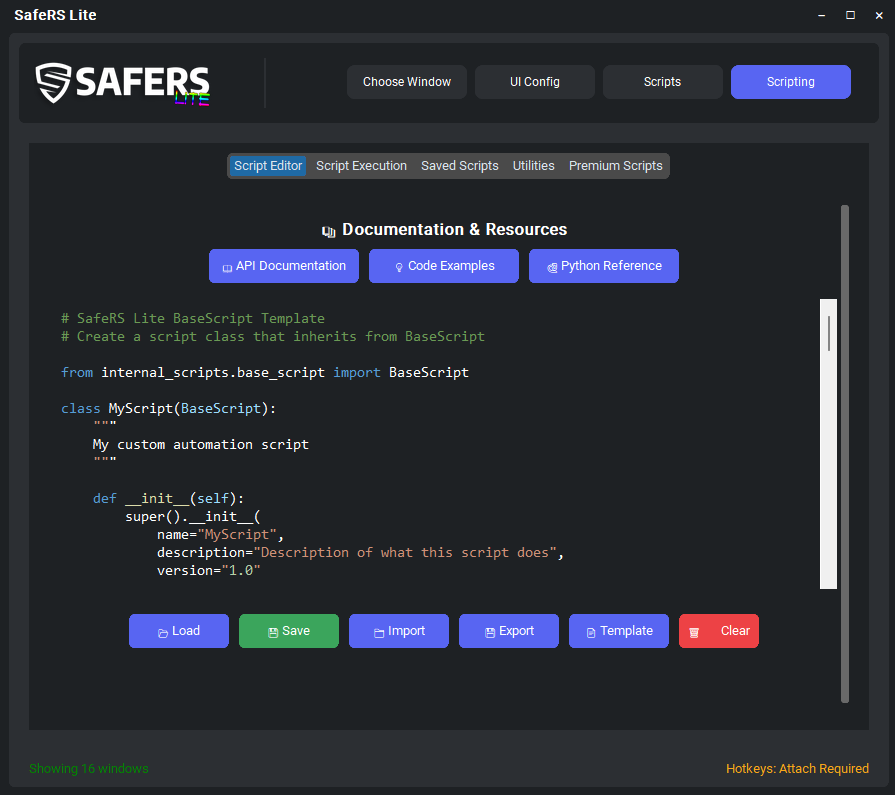
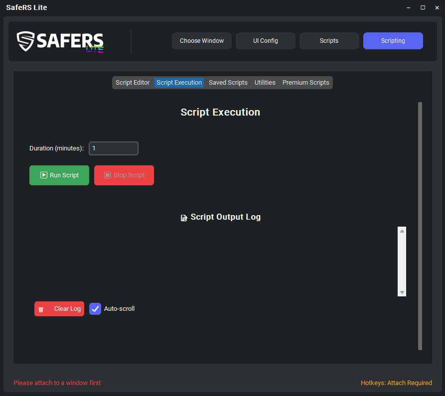
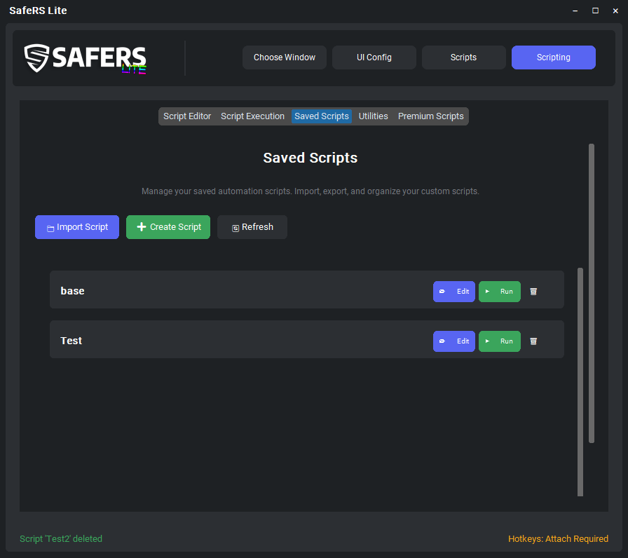
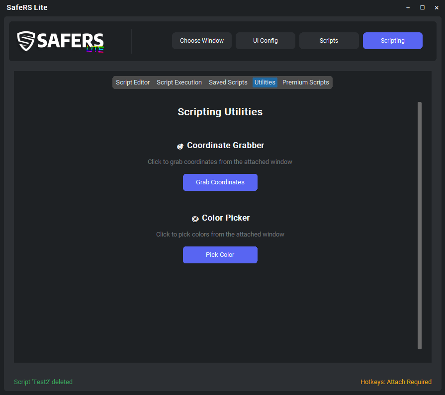

🚀 Welcome to SafeRS Lite
SafeRS Lite is a RuneScape Color-based Automation Engine designed for RuneLite-based OSRS/RSPS clients.
It provides a powerful, non-intrusive scripting framework that works through color detection and game interfaces without taking control of your physical mouse or keyboard.
All scripts inherit from the BaseScript class and have access to comprehensive automation modules for precise game interaction.
📋 Key Features [Click to expand]
Non-Intrusive
SafeRS Lite doesn't take control of your physical mouse or keyboard - it works through color detection and game interfaces only.
Structured Scripting
All scripts follow a consistent setup → execute → cleanup pattern for reliable automation.
Automatic Injection
All automation modules are automatically available in your script instance.
Built-in Logging
Timestamped logging system with self.log() for debugging and monitoring.
Error Handling
Comprehensive error handling with proper cleanup and status reporting.
Action Builder
Create complex multi-step action sequences triggered by hotkeys. Chain clicks, color detection, delays, and conditional logic for powerful automation.
Click Forwarder
Forward mouse clicks through action sequences. Step through actions one-by-one with each click or use autoclicker mode for hands-free automation.
🎮 SafeRS Lite Showcase [Click to expand]
Step 1: Window Attachment [Click to expand]
Choose any window that is open on your computer and easily attach SafeRS Lite to it. The window attachment system allows you to target specific applications for automation.
Step 2: Area Configuration [Click to expand]
SafeRS Lite comes with a bunch of standard required areas to configure with custom draw handling. These areas are initialized as globals for scripting:
self.inventory- Inventory area dataself.play_area- Main game area dataself.bank- Bank interface area dataself.spellbook- Spellbook area dataself.chat- Chat interface area dataself.minimap- Minimap area dataself.equipment- Equipment area dataself.prayer_menu- Prayer menu area dataself.compass- Compass area dataself.health_orb- Health orb area dataself.prayer_orb- Prayer orb area dataself.run_orb- Run orb area dataself.special_attack_orb- Special attack orb area dataself.xp_drop_area- XP drop area datacustom areas by string- Custom areas data if you put a space use underscores
Step 3: Script Management [Click to expand]
Your saved scripts will load here and you can run them directly from this interface. This is your script library where all your automation scripts are organized.
SafeRS Lite comes with a built-in gear switcher that allows you to quickly switch between equipment setups. This is included with every SafeRS Lite installation.
Step 4: Script Editor [Click to expand]
The built-in script loader lets you paste in your script or edit existing ones. Scripts can be loaded from your saved scripts library or created from scratch.
Step 5: Script Execution [Click to expand]
Start and stop your scripts with simple controls. The log output area shows real-time feedback from your running scripts, including status updates and any errors.
Step 6: Saved Scripts Management [Click to expand]
Manage your saved scripts configuration. Scripts are automatically saved and will load into the program each time you start SafeRS Lite.
Step 7: Script Utilities [Click to expand]
Helpful utilities for picking coordinates and colors. These tools make it easy to identify specific screen locations and color values for your automation scripts.
Step 8: Action Builder [Click to expand]
Build powerful action sequences that execute with a single hotkey press. Create multi-step automations with conditional logic, color detection, and human-like timing.
Action Builder allows you to:
- Chain multiple actions together (clicks, key presses, delays, color scanning)
- Use conditional logic based on color detection results
- Assign hotkeys to trigger entire sequences instantly
- Create reusable action sets for common tasks
- Interact with inventory, spellbook, equipment, and custom areas
Perfect for gear switching, quick actions, and complex automation workflows.
Step 9: Click Forwarder [Click to expand]
Forward mouse clicks through action sequences step-by-step. Each click executes the next action in your configured sequence, giving you precise control over complex automation.
Click Forwarder features:
- Step-through mode: Execute actions one-by-one with each click
- Autoclicker mode: Automatically execute actions at configurable intervals
- Multiple action sets: Switch between different sequences on the fly
- Toggle hotkeys: Enable/disable forwarding with a key press
- Works seamlessly with Action Builder sequences
Ideal for repetitive tasks, gear switches, and situations where you want to control the pace of automation.
⚙️ Action Builder & Click Forwarder [Click to expand]
Action Builder
The Action Builder allows you to create sequences of actions that are triggered by hotkeys. This powerful feature lets you automate complex multi-step operations with a single key press.
- Action Sequences: Chain together multiple actions (clicks, color detection, key presses, delays, etc.)
- Hotkey Triggers: Assign any keyboard hotkey to activate your action sequence
- Conditional Logic: Use if/else statements based on color detection results
- Area-Based Actions: Click locations, scan colors, and interact with inventory slots, spellbook, equipment, and custom areas
- Human-like Timing: Randomize delays and click positions for natural behavior
Available Action Types
| Action Type | Description |
|---|---|
👆 Click |
Click a specific location, inventory slot, spellbook slot, or equipment slot |
🔍 Find & Click |
Scan an area for a color and automatically click it when found |
⌨️ Key |
Press a keyboard key or key combination (with Ctrl, Shift, Alt modifiers) |
⏱️ Wait |
Pause execution for a specified duration (with optional randomization) |
⏳ Wait Color |
Wait until a specific color appears in an area before continuing |
✅ If Found |
Conditional - only execute next actions if previous color scan found a match |
❌ If Missing |
Conditional - only execute next actions if previous color scan did NOT find a match |
↩️ End If |
End a conditional block (if/else) |
⛔ Stop |
Stop execution of the action sequence |
🎲 Antiban |
Random chance to skip this action (for human-like variation) |
Click Forwarder
The Click Forwarder allows you to step through action sequences with each mouse click. It provides precise control over when actions execute, perfect for situations where you want manual control over the automation pace.
- Step-Through Mode: Execute actions one-by-one with each left click
- Autoclicker Mode: Automatically execute actions at configurable intervals (hands-free)
- Action Set Integration: Use the same action sets created in Action Builder
- Toggle Hotkeys: Enable or disable forwarding with a single key press
- Smart Click Forwarding: Forwards clicks to the attached window while executing actions
- Human-like Behavior: Optional randomization and attention drift simulation
How It Works
Click Forwarder intercepts your mouse clicks and forwards them to the attached game window while simultaneously executing the next action in your configured sequence. This creates a seamless integration between your manual input and automated actions.
📤 Uploading Scripts to Marketplace [Click to expand]
Packaging Your Script
Before uploading, you need to package your script with all its configurations. SafeRS Lite creates a complete bundle that includes everything needed to run your script.
How to Package
To package your script with all configurations:
- Navigate to the Scripts tab
- Select your script from the list
- Click the Package button
- Choose a location to save the
bundle.jsonfile
The packaged bundle includes all scan areas, custom areas, and the RuneLite profile you're currently using. This ensures anyone who downloads your script will have the exact same configuration.
Script Configuration & Bundles
When you package a script for sharing or marketplace distribution, SafeRS Lite automatically bundles everything needed to run the script with your exact configuration.
What Gets Included in Script Bundles
Script bundles (saved as bundle.json) contain all the necessary configuration:
Script Content
The complete Python script source code that defines your automation logic. This is the core of your script.
Scan Areas
All configured scan area coordinates are included. This includes:
- Standard areas:
inventory,play_area,bank,spellbook,chat,minimap, etc. - All custom configured scan areas with their exact coordinates
- Area definitions that scripts reference during execution
When someone downloads your script, they'll get the exact area configurations you used, ensuring consistent behavior.
Custom Areas
Any custom area definitions you've created are included in the bundle. Custom areas allow scripts to interact with specific screen regions beyond the standard areas.
Note: Custom area names with spaces should use underscores when referenced in scripts (e.g., "my_custom_area").
RuneLite Profile
The complete RuneLite plugin profile configuration is embedded in the bundle, including:
- Full RuneLite plugin settings (all properties)
- Client configuration that matches your setup
- Plugin configurations that scripts may depend on
When a script is downloaded, the RuneLite profile is automatically created/imported if it doesn't exist. Scripts tied to specific profiles will prompt users to activate the correct profile.
Bundle Structure
The bundle.json file follows this structure:
{ "bundle_version": "2.1", "bundle_type": "script", "bundle_name": "My Script Name", "app_name": "SafeRSLite", "exported": "2024-01-01 12:00:00", "script_content": "# Python script code here...", "scan_areas": { "inventory": [100, 100, 500, 400], "play_area": [50, 50, 750, 550] ... }, "custom_areas": { "my_custom_area": { "coordinates": [200, 200, 300, 300] } }, "runelite_profile": { "name": "SafeRS_MyScript", "properties": "# Full RuneLite profile properties content..." } }
Downloading Scripts from Marketplace
When you download a script from the marketplace:
- Scan Areas: All configured areas are automatically imported and set up
- Custom Areas: Any custom areas are added to your configuration
- RuneLite Profile: The profile is automatically created/imported if it doesn't exist. You'll be prompted to activate it if needed
- Profile Naming: Scripts from the marketplace use profiles named
SafeRS_[scriptname]to avoid conflicts
This means scripts will work immediately after download without manual configuration!
Upload Requirements & Process
SafeRS Lite has specific requirements and processes for script submissions to ensure quality and maintain standards.
Upload Methods
Premium Scripter Role - Direct Upload
If you have the Premium Scripter Discord role, you can upload scripts directly through the SafeRS Lite client. This allows for instant publishing to the marketplace.
- Navigate to the Scripting tab
- Click Select Bundle to Upload button
- Choose your
bundle.jsonfile - Your script will be uploaded and available immediately
Portal Submission - Standard Process
If you don't have the Premium Scripter role, submit your script through the submission portal for review and approval.
- Package your script using the steps above
- Submit your
bundle.jsonthrough the official submission portal - Developers review your submission for quality and standards compliance
- If approved, an authorized moderator adds your script to the marketplace
This process ensures all scripts meet SafeRS Lite's quality standards before being available to users.
Script Standards
All scripts submitted to the marketplace must follow SafeRS Lite's script standards:
- Code Quality: Clean, readable, and well-documented code
- Error Handling: Proper exception handling and cleanup procedures
- Resource Management: Correct cleanup in the
cleanup()method - Naming Conventions: Descriptive class and variable names
- Documentation: Clear docstrings explaining script functionality
- Configuration: Properly bundled with all required areas and profiles
Premium Scripts
Premium scripts are paid scripts available through the marketplace. There are special requirements for premium scripts:
- Premium Scripter Requirement: Only Premium Scripters can create premium scripts
- Payment Processing: Must work with SafeRS Lite team to set up payment processing
- Customizations: Additional features and integrations require coordination with the development team
- Approval Process: Premium scripts undergo additional review to ensure payment systems work correctly
If you're interested in creating premium scripts, contact the SafeRS Lite team through Discord to discuss requirements and payment setup.
Free Script Sharing
Anyone can create and share scripts for free! However, there's an important distinction:
Free Sharing vs. Marketplace:
- Free Sharing: You can share your script files (
bundle.json) directly with others through any method (Discord, forums, etc.) - no approval needed - Marketplace: Scripts in the marketplace must be approved and verified. Only approved scripts appear in the in-client marketplace for users to browse and download
The marketplace is limited to approved/verified scripts only to ensure quality and safety for all users.
Submission Checklist
Before submitting your script, make sure you have:
- ✅ Tested your script thoroughly
- ✅ Packaged your script with all configurations (bundle.json)
- ✅ Verified all scan areas are properly configured
- ✅ Included appropriate RuneLite profile (if required)
- ✅ Added clear documentation and comments to your code
- ✅ Implemented proper error handling and cleanup
- ✅ Followed SafeRS Lite script standards
- ✅ Make sure your script is configured to run on the fixed interface style for standardization. You can specify if it can be used in either or make multiple version. Contact the developers for support on this.
📝 Base Script Template [Click to expand]
Complete Example Script
This template demonstrates all the key concepts of SafeRS Lite scripting:
# SafeRS Lite BaseScript Template # Create a script class that inherits from BaseScript from internal_scripts.base_script import BaseScript class MyScript(BaseScript): """ My custom automation script """ def __init__(self): super().__init__( name="MyScript", description="Description of what this script does", version="1.0" ) # Set script metadata self.metadata.update({ 'category': 'general', # e.g., 'combat', 'skilling', 'utility' 'tags': ['template'], # e.g., ['combat', 'pvm', 'afk'] 'requirements': [] # e.g., ['inventory_space', 'specific_item'] }) # Script-specific variables self.target_slot = 1 self.wait_duration = 5.0 def setup(self) -> bool: """ Setup method called before script execution Initialize any resources needed for the script """ self.log("Setting up MyScript...") # Check if required automation modules are available if not hasattr(self, 'inventory'): self.log("ERROR: Inventory automation not available") return False if not hasattr(self, 'timing'): self.log("ERROR: Timing automation not available") return False self.log(f"Target slot: {self.target_slot}") self.log(f"Wait duration: {self.wait_duration} seconds") self.log("Setup completed successfully") return True def execute_iteration(self) -> bool: """ Execute one iteration of the script This is where your main script logic goes """ try: # Example: Click inventory slot 1 self.log(f"Clicking inventory slot {self.target_slot}") success = self.click_slot(self.target_slot) if not success: self.log("ERROR: Failed to click inventory slot") return False # Example: Wait for 5 seconds self.log(f"Waiting {self.wait_duration} seconds...") self.wait(self.wait_duration) self.log("Iteration completed successfully") return True except Exception as e: self.log(f"ERROR in execute_iteration: {str(e)}") return False def cleanup(self) -> None: """ Cleanup method called after script execution Clean up any resources used by the script """ self.log("Cleaning up MyScript...") self.log("Script finished") # Available automation modules (injected into script instance): # self.mouse - Mouse automation (click_coordinates, move, etc.) # self.color - Color detection (find_color, wait_for_color, etc.) # self.keyboard - Keyboard input (press_key, send_string, etc.) # self.timing - Timing functions (wait, wait_random, etc.) # self.inventory_automation - Inventory management (click_slot, drop_all_color, etc.) # self.spellbook - Spellbook interaction (click_spell, etc.) # self.hotkey - Hotkey management (register_hotkey, etc.) # self.movement - Movement detection (is_moving, wait_for_movement, etc.) # Convenience methods available: # self.click_slot(slot_id) - Click inventory slot # self.click_spell(slot_id) - Click spellbook slot # self.find_color(area, color_hex, tolerance=10) - Find color in area # self.wait_for_color(area, color_hex, timeout=10.0) - Wait for color # self.wait(duration) - Wait for duration # self.wait_random(min_duration, max_duration) - Random wait # self.log(message) - Log message with timestamp # Scan area variables (automatically injected): # self.inventory - Inventory area data # self.play_area - Main game area data # self.bank - Bank interface area data # self.spellbook - Spellbook area data # etc. # Usage with scripting engine: # script = MyScript() # scripting_engine.execute_base_script(script, duration=60.0)
🎮 Automation API Modules [Click to expand]
Quick access to all automation modules. Click any module for detailed API documentation:
📚 Default Libraries Available [Click to expand]
Built-in Python Libraries
The following Python standard libraries are available in all SafeRS Lite scripts without additional imports:
🐍 Core Python
os, sys, time, datetime, random, math
🔢 Data Types
collections, itertools, functools, operator
📁 File I/O
json, pickle, csv, pathlib
🌐 Networking
urllib, requests, socket
🔍 String Processing
re, string, unicodedata
🧮 Advanced
threading, multiprocessing, concurrent.futures
SafeRS Lite Specific Libraries
🎮 Game Automation
All src.core.scripting_api modules are automatically injected
🖼️ Computer Vision
cv2 (OpenCV), numpy, PIL (Pillow)
🖱️ Input Control
keyboard, win32gui, win32con
🎨 GUI Framework
customtkinter, tkinter
import random, import time, import json, etc.
💻 Free Scripts [Click to expand]
Simple Woodcutter Script
This example demonstrates a complete woodcutting automation script that cuts trees and drops logs:
# SafeRS Lite BaseScript Template # Create a script class that inherits from BaseScript from internal_scripts.base_script import BaseScript class SimpleWoodcutter(BaseScript): """ Simple Woodcutter - Cuts trees and drops logs """ class WoodcutterStates(enum.Enum): CUTTING_TREE = "Cutting Tree" DROPPING_LOGS = "Dropping Logs" CHECKING_INVENTORY = "Checking Inventory" def __init__(self): super().__init__( name="Simple Woodcutter", description="Cuts trees and drops logs", version="1.0" ) # Set script metadata self.metadata.update({ 'category': 'skilling', # e.g., 'combat', 'skilling', 'utility' 'tags': ['woodcutting', 'afk'], # e.g., ['combat', 'pvm', 'afk'] 'requirements': [] # e.g., ['inventory_space', 'specific_item'] }) # Script-specific variables self.state = self.WoodcutterStates.CHECKING_INVENTORY self.tree_color = "#00FF00" self.log_color = "#0000FF" self.xp_drop_color = "#9fa399" def setup(self) -> bool: """ Setup method called before script execution Initialize any resources needed for the script """ self.log("Setting up Basic Woodcutter...") # Check if required automation modules are available if not hasattr(self, 'inventory_automation'): self.log("ERROR: Inventory automation not available") return False self.log("Setup completed successfully") return True def execute_iteration(self) -> bool: """ Execute one iteration of the script This is where your main script logic goes """ try: self.log(f"Current state: {self.state}") self.execute_state(self.state) return True # Continue execution except Exception as e: self.log(f"ERROR in execute_iteration: {str(e)}") import traceback self.log(f"Traceback: {traceback.format_exc()}") return False def cleanup(self) -> None: """ Cleanup method called after script execution Clean up any resources used by the script """ self.log("Cleaning up MyScript...") self.log("Script finished") def execute_state(self, state: WoodcutterStates): if self.state == self.WoodcutterStates.CUTTING_TREE: self.log("Cutting Tree") self.handle_cutting_tree() elif self.state == self.WoodcutterStates.DROPPING_LOGS: self.log("Dropping Logs") self.handle_dropping_logs() elif self.state == self.WoodcutterStates.CHECKING_INVENTORY: self.log("Checking Inventory") self.handle_checking_inventory() def handle_checking_inventory(self): self.log("Checking Inventory") # Check if inventory is full self.log("Checking inventory...") last_slot = len(self.inventory_slots) - 1 self.log(f"Checking last slot {last_slot} for log color {self.log_color}") slot_data = self.inventory_slots[last_slot] self.log(f"Last slot data: {slot_data}") if self.inventory_automation.does_color_exist_at_slot(last_slot, self.log_color, 10): self.log("Inventory full, switching to dropping state") self.state = self.WoodcutterStates.DROPPING_LOGS else: self.log("Inventory not full, continuing to cut") self.wait_random(1.0, 3.0) def handle_cutting_tree(self): self.log("Cutting Tree") try: # Tree detection and clicking self.log("Looking for tree...") if self.color.find_and_click_color("play_area", self.tree_color, 10, "left", True): self.log("Clicked Tree") self.wait_random(1.0, 3.0) # Wait for XP to be gained self.log("Waiting for XP...") if self.color.wait_for_xp_gain("xp_drop", self.xp_drop_color, 5, 5.0): self.log("XP gained successfully") else: self.log("Failed to gain XP") self.state = self.WoodcutterStates.CHECKING_INVENTORY except Exception as e: self.log(f"ERROR in handle_cutting_tree: {str(e)}") import traceback self.log(f"Traceback: {traceback.format_exc()}") def handle_dropping_logs(self): self.log("Dropping Logs") # Drop all logs with blue color from inventory self.log(f"Looking for color {self.log_color} in inventory...") # First, let's check which slots actually have the color slots_with_color = [] for slot_id in range(len(self.inventory_slots)): if self.inventory_automation.does_color_exist_at_slot(slot_id, self.log_color, 10): slots_with_color.append(slot_id) if not slots_with_color: self.log("No slots found with target color, switching to cutting") self.state = self.WoodcutterStates.CUTTING_TREE return self.log(f"Found {len(slots_with_color)} slots with color: {slots_with_color}") if self.inventory_automation.drop_all_color(self.log_color, 10): self.log("Logs dropped successfully") self.wait_random(1.0, 3.0) self.state = self.WoodcutterStates.CUTTING_TREE else: self.log("Failed to drop logs") self.stop_script()
- Advanced State Management: Uses enum states (CUTTING_TREE, CHECKING_INVENTORY, DROPPING_LOGS) for precise control flow
- Smart Color Detection: Finds trees by green color (#00FF00) and logs by blue color (#0000FF) using intelligent pixel scanning
- XP Monitoring: Uses pixel scanning for reliable XP text detection (#9fa399) with proper success/failure handling
- Intelligent Inventory Management: Checks last slot for accurate inventory full detection and logs detailed slot information
- Debug Logging: Comprehensive logging shows exactly which slots contain target colors for troubleshooting
- Robust Error Handling: Comprehensive error handling with detailed logging and traceback information
- Human-like Timing: Random delays between actions for natural, undetectable behavior
- Smart Dropping: Holds Shift key throughout entire dropping sequence for efficient log removal
Simple Fisher Script
This example demonstrates a complete fishing automation script that catches fish and drops unwanted ones:
# SafeRS Lite BaseScript Template # Create a script class that inherits from BaseScript from internal_scripts.base_script import BaseScript class SimpleFisher(BaseScript): """ Simple Fisher - Fished and drops unwanted fish """ class FisherStates(enum.Enum): FISHING = "Fishing" DROPPING_FISH = "Dropping Fish" CHECKING_INVENTORY = "Checking Inventory" def __init__(self): super().__init__( name="Simple Fisher", description="Fished and drops unwanted fish", version="1.0" ) # Set script metadata self.metadata.update({ 'category': 'skilling', 'tags': ['fishing', 'afk'], 'requirements': [] }) # Script-specific variables self.state = self.FisherStates.CHECKING_INVENTORY self.fish_color = "#00FF00" self.fish_inventory_color = "#0000FF" self.xp_drop_color = "#9fa399" def setup(self) -> bool: self.log("Setting up Basic Fisher...") # Check if required automation modules are available if not hasattr(self, 'inventory_automation'): self.log("ERROR: Inventory automation not available") return False self.log("Setup completed successfully") return True def execute_iteration(self) -> bool: """ Execute one iteration of the script This is where your main script logic goes """ try: self.log(f"Current state: {self.state}") self.execute_state(self.state) return True # Continue execution except Exception as e: self.log(f"ERROR in execute_iteration: {str(e)}") import traceback self.log(f"Traceback: {traceback.format_exc()}") return False def cleanup(self) -> None: """ Cleanup method called after script execution Clean up any resources used by the script """ self.log("Cleaning up MyScript...") self.log("Script finished") def execute_state(self, state: FisherStates): if self.state == self.FisherStates.FISHING: self.log("Fishing") self.handle_fishing() elif self.state == self.FisherStates.DROPPING_FISH: self.log("Dropping Fish") self.handle_dropping_fish() elif self.state == self.FisherStates.CHECKING_INVENTORY: self.log("Checking Inventory") self.handle_checking_inventory() def handle_checking_inventory(self): self.log("Checking Inventory") # Check if inventory is full self.log("Checking inventory...") last_slot = len(self.inventory_slots) - 1 self.log(f"Checking last slot {last_slot} for fish color {self.fish_inventory_color}") slot_data = self.inventory_slots[last_slot] self.log(f"Last slot data: {slot_data}") if self.inventory_automation.does_color_exist_at_slot(last_slot, self.fish_inventory_color, 10): self.log("Inventory full, switching to dropping state") self.state = self.FisherStates.DROPPING_FISH else: self.log("Inventory not full, continuing to cut") self.wait_random(1.0, 3.0) self.state = self.FisherStates.FISHING def handle_fishing(self): self.log("Fishing") try: # Fish detection and clicking self.log("Looking for fish...") if self.color.find_and_click_color("play_area", self.fish_color, 10, "left", True): self.log("Clicked Fish") self.wait_random(1.0, 3.0) # Wait for XP to be gained self.log("Waiting for XP...") if self.color.wait_for_xp_gain("xp_drop", self.xp_drop_color, 5, 5.0): self.log("XP gained successfully") else: self.log("Failed to gain XP") self.state = self.FisherStates.CHECKING_INVENTORY except Exception as e: self.log(f"ERROR in handle_fishing: {str(e)}") import traceback self.log(f"Traceback: {traceback.format_exc()}") def handle_dropping_fish(self): self.log("Dropping Fish") # Drop all fish with blue color from inventory self.log(f"Looking for color {self.fish_inventory_color} in inventory...") # First, let's check which slots actually have the color slots_with_color = [] for slot_id in range(len(self.inventory_slots)): if self.inventory_automation.does_color_exist_at_slot(slot_id, self.fish_inventory_color, 10): slots_with_color.append(slot_id) if not slots_with_color: self.log("No slots found with target color, switching to fishing") self.state = self.FisherStates.FISHING return self.log(f"Found {len(slots_with_color)} slots with color: {slots_with_color}") if self.inventory_automation.drop_all_color(self.fish_inventory_color, 10): self.log("Fish dropped successfully") self.wait_random(1.0, 3.0) self.state = self.FisherStates.FISHING else: self.log("Failed to drop fish") self.stop_script()
- Automated Fishing: Uses state management (FISHING, CHECKING_INVENTORY, DROPPING_FISH) for efficient fishing cycles
- Smart Fish Detection: Finds fishing spots by green color (#00FF00) and fish in inventory by blue color (#0000FF)
- XP Monitoring: Waits for XP drops (#9fa399) to confirm successful fishing actions
- Inventory Management: Automatically checks last slot to detect when inventory is full
- Selective Dropping: Only drops unwanted fish while keeping desired items
- Efficient Shift Dropping: Uses advanced shift key handling for reliable item dropping
- Human-like Behavior: Random delays and randomized click positions for natural automation
- Error Handling: Comprehensive error catching with detailed logging for troubleshooting
Simple Stalls Script
This example demonstrates a complete thieving automation script that steals from stalls and drops unwanted items:
# SafeRS Lite Simple Stalls # Create a script class that inherits from BaseScript from internal_scripts.base_script import BaseScript import enum class SimpleStalls(BaseScript): """ Simple Stall Thievery - Thieves stalls and drops unwanted items """ class StallsStates(enum.Enum): THIEVING_STALLS = "Thieving Stalls" DROPPING_UNWANTED_ITEMS = "Dropping Unwanted Items" CHECKING_INVENTORY = "Checking Inventory" def __init__(self): super().__init__( name="Simple Stalls", description="Thieves stalls and drops unwanted items", version="1.0" ) # Set script metadata self.metadata.update({ 'category': 'skilling', 'tags': ['thieving', 'afk'], 'requirements': [] }) # Script-specific variables self.state = self.StallsStates.CHECKING_INVENTORY self.stall_color = "#00FF00" self.unwanted_item_color = "#0000FF" self.xp_drop_color = "#FFFFFF" def setup(self) -> bool: self.log("Setting up Basic Woodcutter...") # Check if required automation modules are available if not hasattr(self, 'inventory_automation'): self.log("ERROR: Inventory automation not available") return False self.log("Setup completed successfully") return True def execute_iteration(self) -> bool: """ Execute one iteration of the script This is where your main script logic goes """ try: self.log(f"Current state: {self.state}") self.execute_state(self.state) return True # Continue execution except Exception as e: self.log(f"ERROR in execute_iteration: {str(e)}") import traceback self.log(f"Traceback: {traceback.format_exc()}") return False def cleanup(self) -> None: """ Cleanup method called after script execution Clean up any resources used by the script """ self.log("Cleaning up MyScript...") self.log("Script finished") def execute_state(self, state: StallsStates): if self.state == self.StallsStates.THIEVING_STALLS: self.log("Thieving Stalls") self.handle_thieving_stalls() elif self.state == self.StallsStates.DROPPING_UNWANTED_ITEMS: self.log("Dropping Unwanted Items") self.handle_dropping_unwanted_items() elif self.state == self.StallsStates.CHECKING_INVENTORY: self.log("Checking Inventory") self.handle_checking_inventory() def handle_checking_inventory(self): self.log("Checking Inventory") # Check if inventory is full self.log("Checking inventory...") last_slot = len(self.inventory_slots) - 1 self.log(f"Checking last slot {last_slot} for unwanted item color {self.unwanted_item_color}") slot_data = self.inventory_slots[last_slot] self.log(f"Last slot data: {slot_data}") if self.inventory_automation.does_color_exist_at_slot(last_slot, self.unwanted_item_color, 10): self.log("Inventory full, switching to dropping state") self.state = self.StallsStates.DROPPING_UNWANTED_ITEMS else: self.log("Inventory not full, continuing to thieve") self.wait_random(1.0, 3.0) self.state = self.StallsStates.THIEVING_STALLS def handle_thieving_stalls(self): self.log("Thieving Stalls") try: # Stall detection and clicking self.log("Looking for stalls...") if self.color.find_and_click_color("play_area", self.stall_color, 10, "left", True): self.log("Clicked Stall") # Wait for XP to be gained self.log("Waiting for XP...") if self.color.wait_for_gained_xp("xp_drop", self.xp_drop_color, 5, 5.0): self.log("XP gained successfully") time.sleep(random.uniform(1.0, 3.0)) else: self.log("Failed to gain XP") self.state = self.StallsStates.CHECKING_INVENTORY except Exception as e: self.log(f"ERROR in handle_thieving_stalls: {str(e)}") import traceback self.log(f"Traceback: {traceback.format_exc()}") def handle_dropping_unwanted_items(self): self.log("Dropping Unwanted Items") # Drop all unwanted items with blue color from inventory self.log(f"Looking for color {self.unwanted_item_color} in inventory...") # First, let's check which slots actually have the color slots_with_color = [] for slot_id in range(len(self.inventory_slots)): if self.inventory_automation.does_color_exist_at_slot(slot_id, self.unwanted_item_color, 10): slots_with_color.append(slot_id) if not slots_with_color: self.log("No slots found with target color, switching to thieving") self.state = self.StallsStates.THIEVING_STALLS return self.log(f"Found {len(slots_with_color)} slots with color: {slots_with_color}") if self.inventory_automation.drop_all_color(self.unwanted_item_color, 10): self.log("Unwanted items dropped successfully") self.wait_random(1.0, 3.0) self.state = self.StallsStates.THIEVING_STALLS else: self.log("Failed to drop unwanted items") self.stop_script()
- Stall Thievery Automation: Uses state management (THIEVING_STALLS, CHECKING_INVENTORY, DROPPING_UNWANTED_ITEMS) for efficient thieving cycles
- Smart Stall Detection: Finds stalls by green color (#00FF00) for consistent targeting
- XP Drop Monitoring: Detects white XP drops (#FFFFFF) to confirm successful thieving attempts
- Inventory Overflow Management: Automatically checks inventory fullness to prevent item loss
- Selective Item Dropping: Only drops unwanted items (#0000FF) while keeping valuable loot
- Advanced Shift Key Handling: Uses multiple fallback methods for reliable shift key registration
- Natural Timing: Random delays and humanized click patterns to avoid detection
- Robust Error Recovery: Comprehensive error handling with detailed state logging